Bay Area Builders LLC
PASS — preserved white Wix contractor nav, roof hero wording/photo, blue estimate CTA, roofing/remodel trust and dark contact section; fixed placeholder copy and service path clarity.
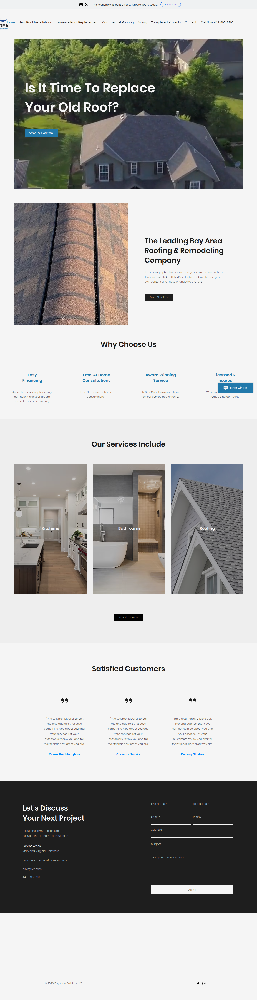
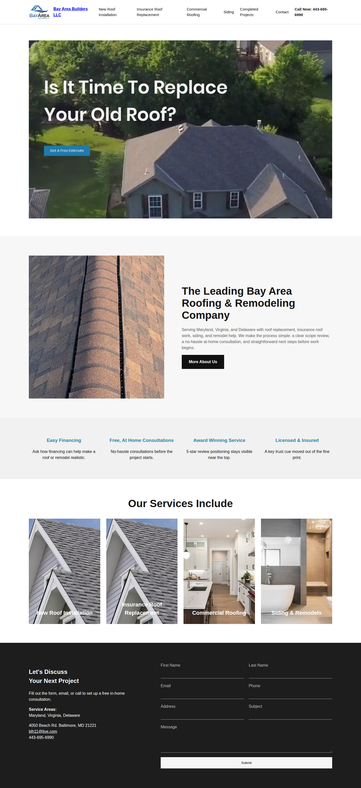
Repair QA report
Source batch 2026-05-10-0200-nightly failed for shared beige/teal templating. This report documents side-by-side fidelity decisions for the repaired same-ten-site batch. No outreach sent; no forms submitted.
PASS — preserved white Wix contractor nav, roof hero wording/photo, blue estimate CTA, roofing/remodel trust and dark contact section; fixed placeholder copy and service path clarity.


PASS — preserved navy/yellow/white shell, social bar, shower-photo carousel feel, grey uppercase headings/yellow underline, services/projects/contact details; fixed placeholder copy and quote CTA.
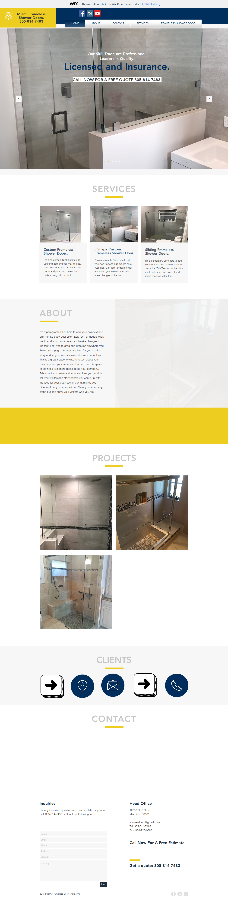
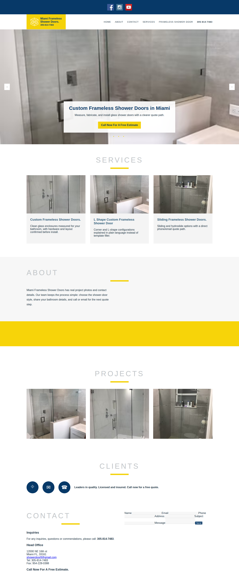
PASS — preserved black/red high-energy moving brand, logo/video hero, “Move FAST, Stay YOUNG!”, Start Online/phone CTAs, insured/referral cues; clarified delivery/moving/storage paths.
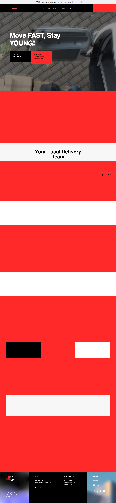
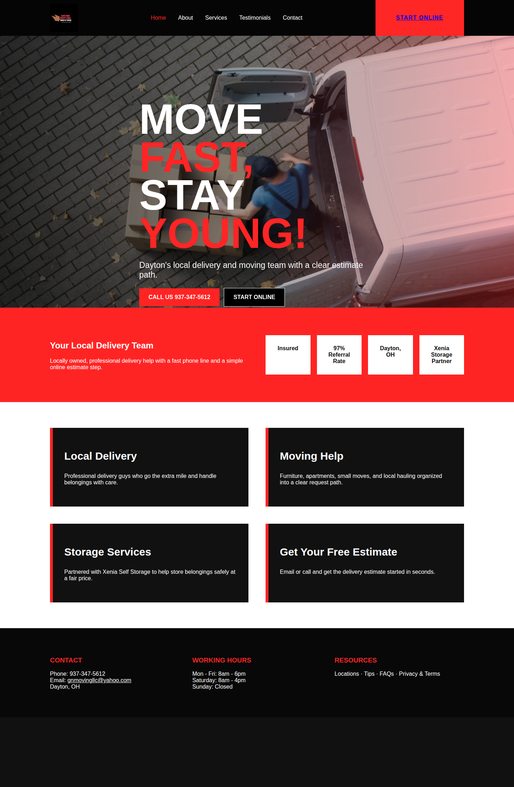
PASS — preserved cream/red shop aesthetic, top contact bar, Rough Country/shop imagery, red heading, services list, black estimate and hours/contact sections; clarified services/trust.
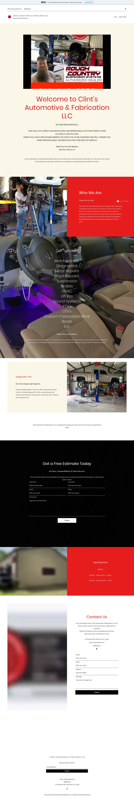
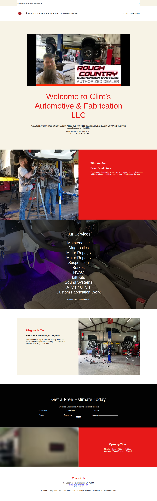
PASS — preserved black nautical serif design, water hero, “Relax & Enjoy” line, shore imagery, friendly Ohio/Michigan boat-story voice, and boat-specific quote fields; clarified first action and services.
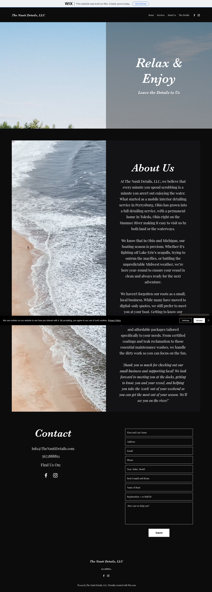
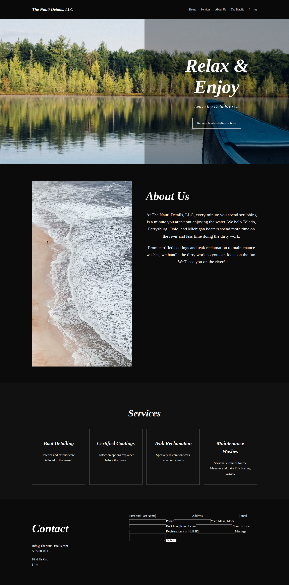
PASS — preserved professional blue/teal accounting shell, office hero with white H1 box, About Harvest, QuickBooks ProAdvisor proof and wine-industry niche; no contractor estimate language.
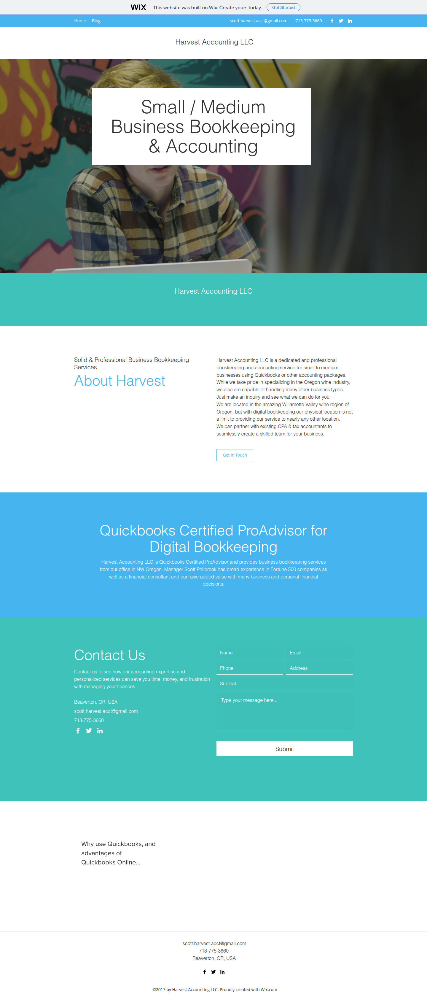
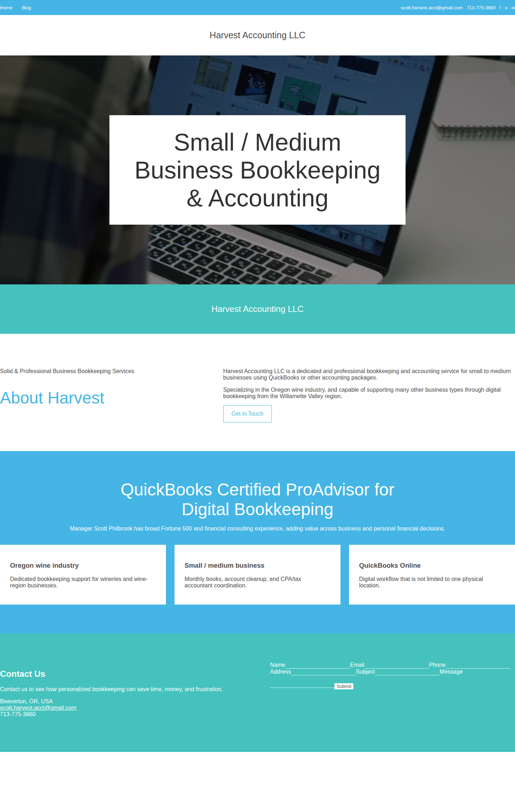
PASS — preserved airy white/blue cleaning look, nav/phone, cleaning imagery and booking card rhythm; removed Service Name leftovers and grouped actual cleaning/detailing services.
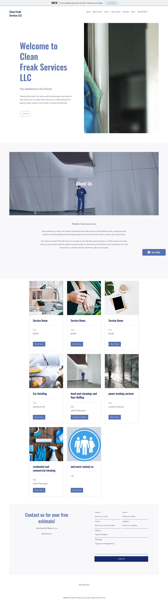
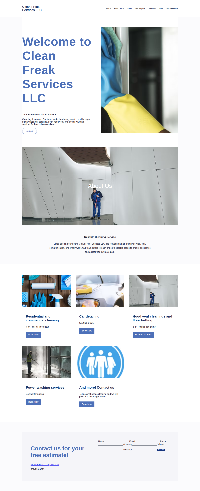
PASS — preserved dark athletic header/hero, kettlebell imagery, Premier Fitness logo, program paths, coach credibility and contact block; clarified consultation/booking step.
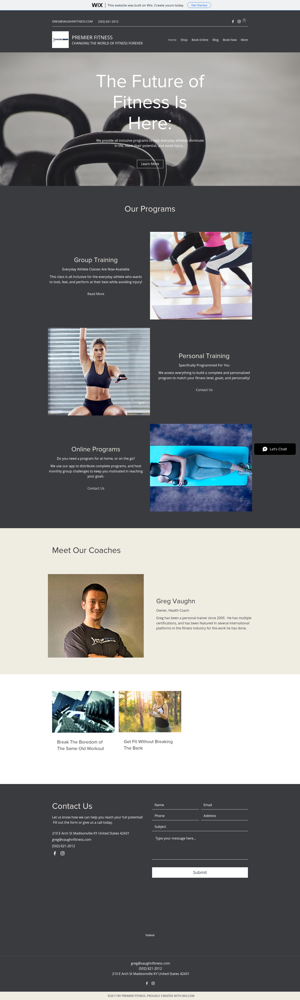
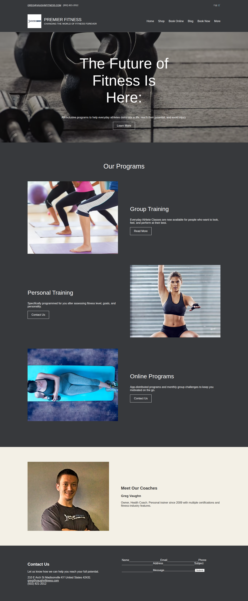
PASS — preserved Kauaʻi food personality, serif white layout, logo/phone/cart shell, poke and plate-lunch photos, hours/catering/location; avoided estimate framing.
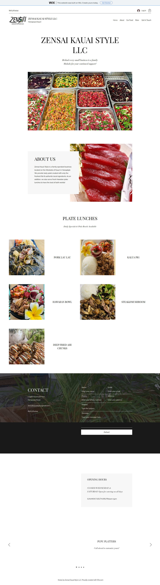
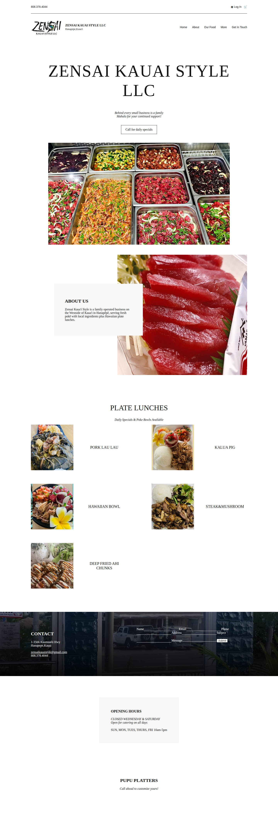
PASS — preserved green/black landscape identity, logo and LI 23085, split grass hero, sprinkler imagery, owner/veteran story, services and project gallery/TCEQ trust; clarified service cards.
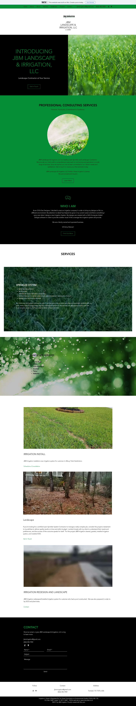
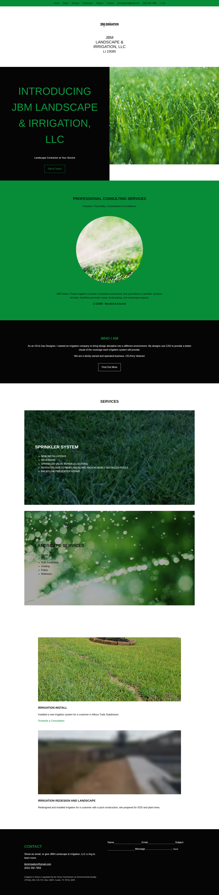